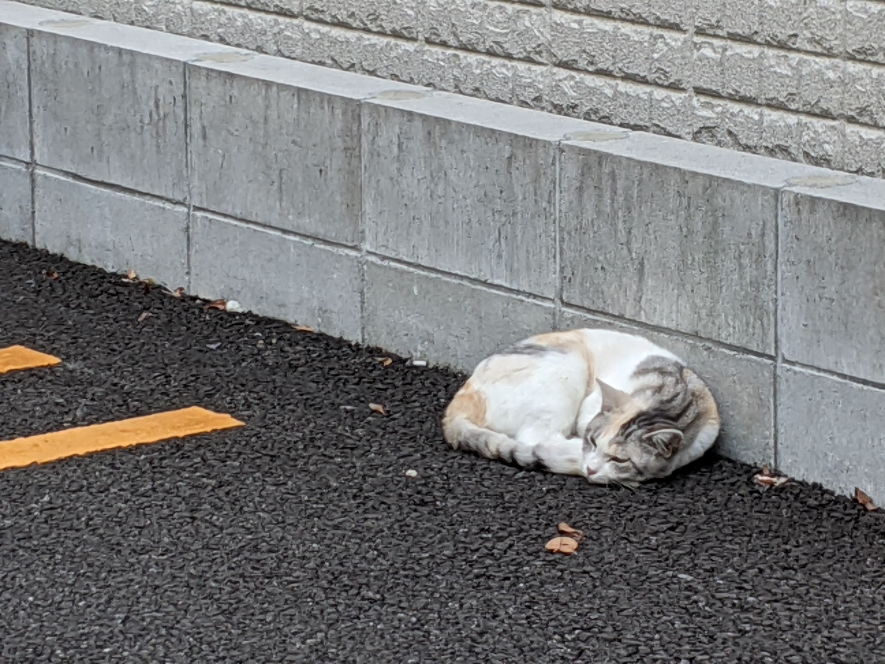
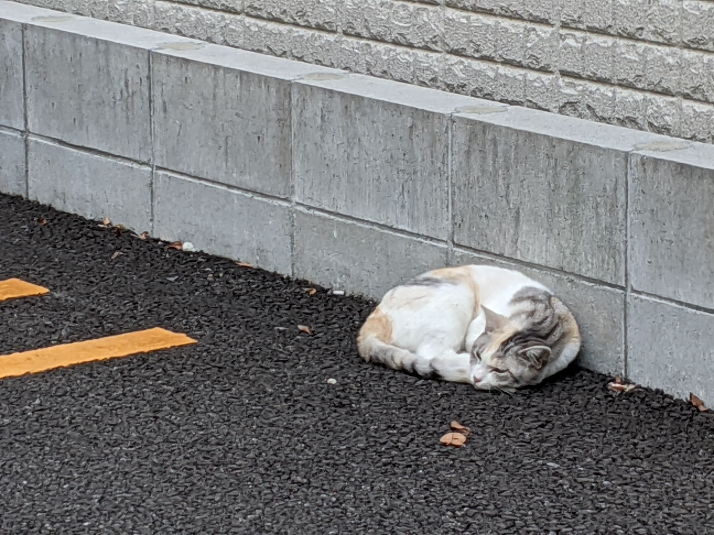

「ネコサファリ」とは？
ネコサファリとは
大分県別府で行われている地域に住んでいる猫に会いに行くツアーの名称です。
この活動を参考として、岐阜の地域でも街に暮らす猫に関心をもってもらいます。
別府路地裏の猫に会いにゆく！ネコサファリツアー（外部リンク）
http://www.gokuraku-jigoku-beppu.com/entries/nekosafari
「ロジねこ」とは？
ロジねことは
1.路地裏に住む猫の愛称です。
2.ロジねこの活動をシェアするアプリの名称です。
「猫の過剰繁殖問題をみんなで考える」地域に暮らす猫と人が共存できる社会を目指す。
ネコサファリ・ロジねこアプリ・ネコの生態勉強会を題材として、猫の過剰繁殖問題を一般に周知できる枠組みを検討していく。
にじのはしスペイクリニック
高橋 葵
私は、公務員獣医師として勤務する中で、猫と人との間に生じるたくさんの問題を経験しました。
野良猫を見て不憫に思い餌をやる人がいる一方で、繁殖を助長し環境被害を生む無責任な餌やりに憤る人がいます。
猫の繁殖力の強さを知らずに飼い始め、多頭飼育崩壊といわれる状態になるまで猫を増やしてしまう人がいます。
そして、増えすぎた猫たちもまた、人から疎まれたり、行き場がなく行政施設に持ち込まれ処分されたり、交通事故や感染症で斃死したり、十分な管理を受けられずに衰弱したりしているのです。
この問題へのアプローチは猫に不妊去勢手術を行うこと。
手術によって猫の繁殖を予防し、猫の数をコントロールすることで、猫も私たちも共生していけるのです。
獣医師として、問題解決の手段である「猫の不妊去勢手術」を普及させたいという思いから、公務員を辞め昨年5月に岐阜市内で手術専門病院を開院しました。
野外に暮らす猫たちと、そこに住むわたしたち。どちらもしあわせに暮らす方法の第１歩として
「猫の不妊去勢手術」や「繁殖予防のための活動（TNR活動）」を身近なこととしてみなさんに知ってもらいたい、そのためにこのプロジェクトではいくつかの活動を企画しています。
この活動を通じ、まずはたくさんの人に問題そのものを知ってもらうこと。そして、最終的には社会全体が問題意識をもって解決に向かうことを願ってやみません。
岐阜の路地裏の猫をたずねて歩く「ネコサファリ」は、猫の過剰繁殖問題にも力を注いでいます。岐阜県の猫の活動に力をいれている団体への寄付も予定しています。
路地裏にいるネコたちは、誰かに飼われているわけではなく、まわりの人達のお世話になって、生活をしています。
そんなネコ達をみんなに興味を持ってもらって、生きやすくするために、写真に収めてネコ達の興味を持ってもらいませんか？
街中でよく見かけるネコ達、ふだんどのように生活しているのか？
ただかわいいから餌をあげたりしていませんか？
そんなネコ達と正しく向き合い、共生していくためにいろいろと勉強をしていきましょう。

ネコサファリとは
大分県別府で行われている地域に住んでいる猫に会いに行くツアーの名称です。
この活動を参考として、岐阜の地域でも街に暮らす猫に関心をもってもらいます。
別府路地裏の猫に会いにゆく！ネコサファリツアー（外部リンク）
http://www.gokuraku-jigoku-beppu.com/entries/nekosafari
ロジねことは
1.路地裏に住む猫の愛称です。
2.ロジねこの活動をシェアするアプリの名称です。